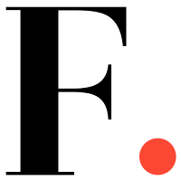
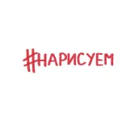
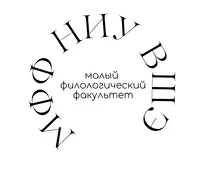
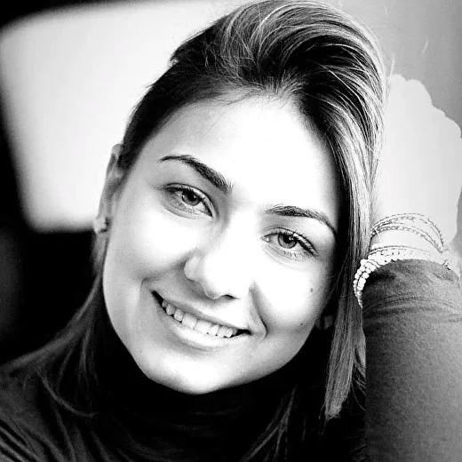
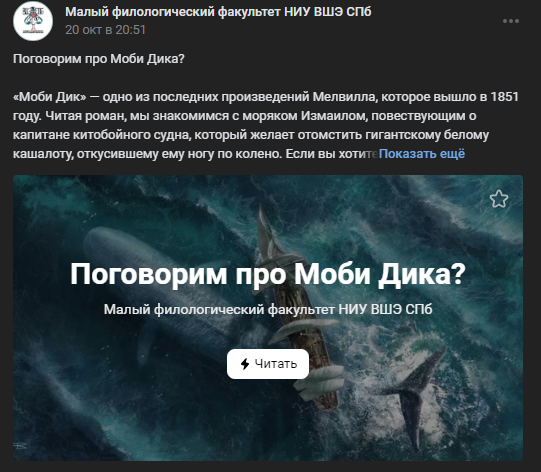
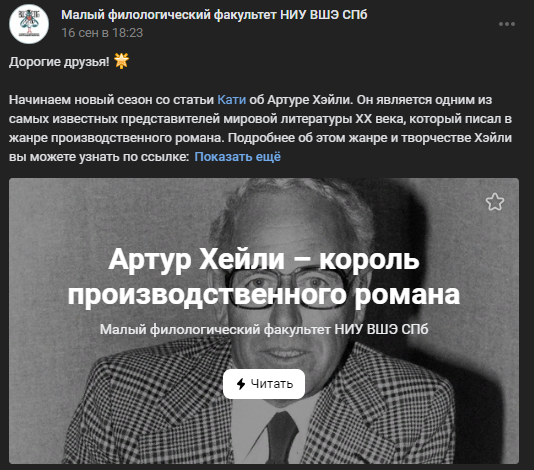

Чем я могу быть полезна?
Я специализируюсь на написании материалов на разных языках по определенным темам
с четко обозначенным ТЗ, а также занимаюсь письменным переводом как художественной литературы, так и
более профильных и специализированных текстов. Но помимо четких и понятных задач я люблю креативный взгляд,
неформальные решения и возможность творчества. Пишу статьи и посты для соц сетей, публикуюсь в разных медиа и
беру интервью.
Мои навыки и знания
— немецкий язык B2
— разговорный английский язык B2
— письменный английский язык C1
— знания о структурировании текста и постановке акцентов
— работа с большими объемами данных, анализ текстов и корпусов текстов
— собственное чувство стиля и восприятие
— опыт работы в журнале и написании контента для определенных людей и профессий
— коммуникабельность, умение подстраиваться под ситуацию, молодой и свежий ум и уникальные идеи
Образование
Муниципальное бюджетное общеобразовательное учреждение «Средняя общеобразовательная школа № 26 с углубленным
изучением иностранных языков» г. Владивосток
2008-2012 гг.
Муниципальное общеобразовательное учреждение «Средняя общеобразовательная школа № 1 с углубленным изучением
английского языка» г. Вологда (филологический класс)
2012-2019 гг.
Федеральное государственное автономное учреждение высшего образования «Национальный исследовательский
университет Высшая школа экономики» г. Санкт-Петербург (образовательная программа Филология)
2019-2023 гг.
Несколько моих классных кейсов
Я стараюсь пробовать разное и новое, поэтому у меня
достаточно большой опыт, огромный ресурс и желание работать!

FAVOT media
Очень классный проект, в котором я работала на позиции CEO и была
редактором статей. К сожалению, сейчас проект закрылся по независящим от меня причинам, но опыт
потрясающий!

Проект #нарисуем
Небольшое креативное
коммьюнити, которое
создали мы вдвоем с подругой. Место, где и
заказчики, и исполнители могут творить, создавать и не бояться рамок и ограничений.

Лекции и статьи в МФФ НИУ ВШЭ
Очень классное сообщество моего университета, где студенты рассказывают
интересный материал абитуриентам или другим студентам. Там я пишу статьи и веду лекции.
Мел
Стажируюсь в интернет-издании "Мел", расшифровываю тексты, ищу экспертов, в будущем буду писать статьи.
Wonder Women
Являюсь частью
команды Wonder Women - сообщества для девушек в технологиях, где мы поддерживаем
женщин в IT, предпринимательстве и науке, вот пример одной из моих
статей.
Чуть подробнее про FAVOT
Кусочек статьи-интервью
Я специализировалась на написании статей и интервью об удивительных и сильных девушках и женщинах нашей современности. Эта статья, например, про Машу Гостеву.

Отзывы моего руководителя в FAVOT media
Марианны Симонян
Катя - чудо девушка! Настоящая wonder woman!
"Надо применять весь твой ресурс, у тебя большой потенциал, мысли совершенно корректные, я полностью согласна с тобой! Молодец!!!"
Малый филологический факультет НИУ ВШЭ СПб
Бесплатные занятия для школьников (и не только) с
преподавателями кафедры и студентами старших курсов на филологическом факультете Питерской Вышки.
Статьи и посты с интересными темами и уникальными
материалами.


Я живу в Санкт-Петербурге и с радостью готова работать онлайн для любого города.